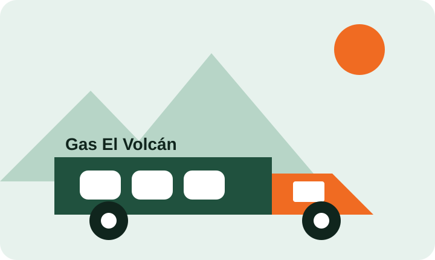

Familia, servicio y territorio
Nosotros
Distribuidora de Gas El Volcán fue fundada en 1998 y atiende a hogares y comercios de Chillán y comunas aledañas.
El desafío que resolvemos
Hoy los pedidos se reciben por teléfono y se anotan en cuadernos. Esto genera llamadas repetidas, duplicados, pedidos no atendidos y poca visibilidad del stock.
El proyecto semestral busca permitir pedidos digitales, seguimiento del despacho, asignación a repartidores y control de existencias. Esta primera evaluación construye únicamente la interfaz base.

Personas involucradas
Operadora
Recibe entre 80 y 120 pedidos diarios y coordina las entregas.
Repartidores
Tres repartidores trabajan con dos camiones y teléfonos Android de gama media-baja.
Administradora
Controla el stock y revisa al final del día los registros de venta.
Desarrollo académico
Proyecto individual desarrollado por Vicente Hueichapan para DSY1104 - Desarrollo Fullstack II.